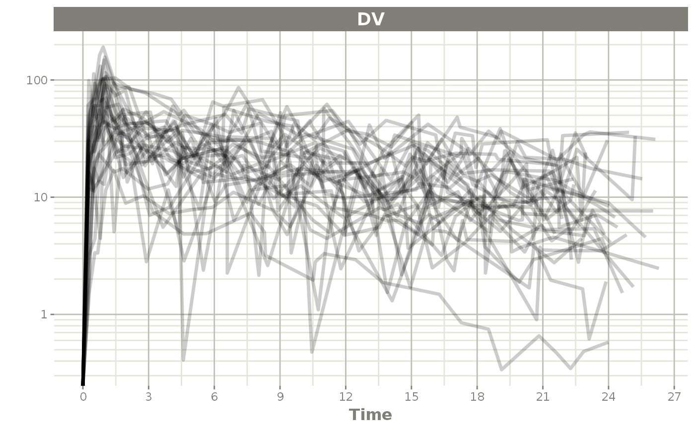

This is an example model for weight based dosing of daptomycin. Daptomycin is a cyclic lipopeptide antibiotic from fermented Streptomyces roseosporus.
There are 3 stages for weight-based dosing simulations: - Create RxODE model - Simulate Covariates - Create event table with weight-based dosing (merged back to covariates)
#> RxODE 1.1.1 using 1 threads (see ?getRxThreads)
#> no cache: create with `rxCreateCache()`
## Note the time covariate is not included in the simulation
m1 <- RxODE({
CL ~ (1-0.2*SEX)*(0.807+0.00514*(CRCL-91.2))*exp(eta.cl)
V1 ~ 4.8*exp(eta.v1)
Q ~ (3.46+0.0593*(WT-75.1))*exp(eta.q);
V2 ~ 1.93*(3.13+0.0458*(WT-75.1))*exp(eta.v2)
A1 ~ centr;
A2 ~ peri;
d/dt(centr) ~ - A1*(CL/V1 + Q/V1) + A2*Q/V2;
d/dt(peri) ~ A1*Q/V1 - A2*Q/V2;
DV = centr / V1 * (1 + prop.err)
})This simulation correlates age, sex, and weight. Since we will be using weight based dosing, this needs to be simulated first
#>
#> Attaching package: 'dplyr'#> The following objects are masked from 'package:stats':
#>
#> filter, lag#> The following objects are masked from 'package:base':
#>
#> intersect, setdiff, setequal, union
nsub=30
# Simulate Weight based on age and gender
AGE<-round(runif(nsub,min=18,max=70))
SEX<-round(runif(nsub,min=0,max=1))
HTm<-round(rnorm(nsub,176.3,0.17*sqrt(4482)),digits=1)
HTf<-round(rnorm(nsub,162.2,0.16*sqrt(4857)),digits=1)
WTm<-round(exp(3.28+1.92*log(HTm/100))*exp(rnorm(nsub,0,0.14)),digits=1)
WTf<-round(exp(3.49+1.45*log(HTf/100))*exp(rnorm(nsub,0,0.17)),digits=1)
WT<-ifelse(SEX==1,WTf,WTm)
CRCL<-round(runif(nsub,30,140))
## id is in lower case to match the event table
cov.df <- tibble(id=seq_along(AGE), AGE=AGE, SEX=SEX, WT=WT, CRCL=CRCL)
print(cov.df)#> # A tibble: 30 x 5
#> id AGE SEX WT CRCL
#> <int> <dbl> <dbl> <dbl> <dbl>
#> 1 1 66 1 49.4 83
#> 2 2 67 1 52.5 79
#> 3 3 33 0 97.9 37
#> 4 4 61 1 63.8 66
#> 5 5 51 0 71.8 127
#> 6 6 45 1 69.6 132
#> 7 7 56 0 61 73
#> 8 8 25 0 57.7 47
#> 9 9 52 1 58.7 65
#> 10 10 55 1 73.1 64
#> # ... with 20 more rows
s<-c(0,0.25,0.5,0.75,1,1.5,seq(2,24,by=1))
s <- lapply(s, function(x){.x <- 0.1 * x; c(x - .x, x + .x)})
e <- et() %>%
## Specify the id and weight based dosing from covariate data.frame
## This requires RxODE XXX
et(id=cov.df$id, amt=6*cov.df$WT, rate=6 * cov.df$WT) %>%
## Sampling is added for each ID
et(s) %>%
as.data.frame %>%
## Merge the event table with the covarite information
merge(cov.df, by="id") %>%
as_tibble
e#> # A tibble: 900 x 12
#> id low time high cmt amt rate evid AGE SEX WT CRCL
#> <int> <dbl> <dbl> <dbl> <chr> <dbl> <dbl> <int> <dbl> <dbl> <dbl> <dbl>
#> 1 1 0 0 0 (obs) NA NA 0 66 1 49.4 83
#> 2 1 NA 0 NA (default) 296. 296. 1 66 1 49.4 83
#> 3 1 0.225 0.246 0.275 (obs) NA NA 0 66 1 49.4 83
#> 4 1 0.45 0.516 0.55 (obs) NA NA 0 66 1 49.4 83
#> 5 1 0.675 0.729 0.825 (obs) NA NA 0 66 1 49.4 83
#> 6 1 0.9 0.921 1.1 (obs) NA NA 0 66 1 49.4 83
#> 7 1 1.35 1.42 1.65 (obs) NA NA 0 66 1 49.4 83
#> 8 1 1.8 1.82 2.2 (obs) NA NA 0 66 1 49.4 83
#> 9 1 2.7 2.97 3.3 (obs) NA NA 0 66 1 49.4 83
#> 10 1 3.6 3.87 4.4 (obs) NA NA 0 66 1 49.4 83
#> # ... with 890 more rows
data <- rxSolve(m1, e,
## Lotri uses lower-triangular matrix rep. for named matrix
omega=lotri(eta.cl ~ .306,
eta.q ~0.0652,
eta.v1 ~.567,
eta.v2 ~ .191),
sigma=lotri(prop.err ~ 0.15),
addDosing = TRUE, addCov = TRUE)
print(data)#> ______________________________ Solved RxODE object _____________________________
#> -- Parameters ($params): -------------------------------------------------------
#> # A tibble: 30 x 5
#> id eta.cl eta.v1 eta.q eta.v2
#> <fct> <dbl> <dbl> <dbl> <dbl>
#> 1 1 -0.437 0.775 -0.0174 -0.245
#> 2 2 -0.0282 0.284 0.294 0.0732
#> 3 3 0.421 0.118 -0.210 0.0272
#> 4 4 -0.489 -0.338 0.181 -0.299
#> 5 5 0.907 0.369 -0.00218 -0.0916
#> 6 6 0.664 0.0865 -0.0508 0.143
#> 7 7 -0.390 -0.466 -0.196 -0.314
#> 8 8 -0.390 0.0103 -0.0412 0.613
#> 9 9 -0.632 -0.569 0.146 -0.198
#> 10 10 -0.392 1.90 -0.0942 -0.181
#> # ... with 20 more rows
#> -- Initial Conditions ($inits): ------------------------------------------------
#> centr peri
#> 0 0
#> -- First part of data (object): ------------------------------------------------
#> # A tibble: 900 x 9
#> id evid cmt amt time DV SEX WT CRCL
#> <int> <int> <int> <dbl> <dbl> <dbl> <dbl> <dbl> <dbl>
#> 1 1 1 1 296. 0 0 1 49.4 83
#> 2 1 0 NA NA 0 0 1 49.4 83
#> 3 1 0 NA NA 0.246 12.6 1 49.4 83
#> 4 1 0 NA NA 0.516 22.0 1 49.4 83
#> 5 1 0 NA NA 0.729 17.5 1 49.4 83
#> 6 1 0 NA NA 0.921 3.46 1 49.4 83
#> # ... with 894 more rows
#> ________________________________________________________________________________
plot(data, log="y")#> Warning: Transformation introduced infinite values in continuous y-axis
This weight-based simulation is adapted from the Daptomycin article below:
Dvorchik B, Arbeit RD, Chung J, Liu S, Knebel W, Kastrissios H. Population pharmacokinetics of daptomycin. Antimicrob Agents Che mother 2004; 48: 2799-2807. doi:(10.1128/AAC.48.8.2799-2807.2004)[https://dx.doi.org/10.1128%2FAAC.48.8.2799-2807.2004]
This simulation example was made available from the work of Sherwin Sy with modifications by Matthew Fidler